Analysis of Lake Water Quality Measurements#
This notebook parses and visualizes water quality data collected by past Environmental Science classes at Lakeshore High School.
Parse Data#
We start by parsing the data into Python.
# We will use the Pandas library to read the data from the Google Sheet
import pandas as pd
url = 'https://docs.google.com/spreadsheets/d/1Y_7_AertX2dd86mXmVtc5ju-sbccSAGZYByXZrDT9sw/export?gid=0&format=csv'
data = pd.read_csv(url)
# Next, let's print the first 20 rows of the data
data.head(20)
| Year | Lake | Class Hour | Temperature (°C) | Conductivity (μS) | pH | Alkalinity (ppm) | Dissolved Oxygen (ppm) | Copper (mg/L) | Iron (mg/L) | Total Hardness (ppm) | Nitrate (mg/L) | Nitrite (mg/L) | Total Chlorine (ppm) | Phosphate (ppm) | Turbidity (NTUs) | |
|---|---|---|---|---|---|---|---|---|---|---|---|---|---|---|---|---|
| 0 | 2020 | Lake Michigan | 2nd | 19.5 | 0.25 | 6.5 | 80 | 4.0 | 0.10 | 0 | 120 | 0 | 0 | 0.1 | 0.1 | NaN |
| 1 | 2021 | Lake Michigan | 2nd | 16.9 | 0.32 | 7.0 | 120 | 8.5 | 0.10 | 0 | 180 | 0 | 0 | 0.0 | 0.2 | NaN |
| 2 | 2021 | Lake Michigan | 3rd | 18.0 | 0.32 | 7.0 | 120 | 8.5 | 0.10 | 0 | 120 | 0 | 0 | 0.1 | 0.2 | NaN |
| 3 | 2022 | Lake Michigan | 3rd | 22.8 | 0.00 | 7.5 | 120 | 8.5 | 0.00 | 0 | 120 | 0 | 0 | 0.1 | NaN | 13.0 |
| 4 | 2022 | Lake Michigan | 6th | 23.9 | 0.33 | 7.5 | 120 | 8.5 | 0.00 | 0 | 50 | 0 | 0 | 0.0 | NaN | 10.0 |
| 5 | 2023 | Lake Michigan | 2nd | 21.4 | 0.30 | 7.0 | 240 | 7.0 | 0.00 | 0 | 120 | 0 | 0 | 0.3 | 0.0 | 6.0 |
| 6 | 2023 | Lake Michigan | 6th | 22.7 | 0.27 | 7.5 | 240 | 10.0 | 0.00 | 0 | 120 | 0 | 0 | 0.1 | 0.0 | 6.0 |
| 7 | 2020 | North Lake | 2nd | 17.9 | 0.50 | 6.5 | 120 | 6.0 | 0.10 | 0 | 120 | 0 | 0 | 0.0 | 0.1 | NaN |
| 8 | 2021 | North Lake | 2nd | 17.6 | 0.46 | 8.0 | 180 | 10.0 | 0.10 | 0 | 250 | 0 | 0 | 0.1 | 0.2 | NaN |
| 9 | 2021 | North Lake | 3rd | 19.0 | 0.45 | 7.5 | 180 | 10.0 | 0.10 | 0 | 180 | 0 | 0 | 0.1 | 0.2 | NaN |
| 10 | 2022 | North Lake | 3rd | 21.0 | 0.40 | 7.5 | 180 | 10.0 | 0.05 | 0 | 180 | 0 | 0 | 0.0 | NaN | 24.0 |
| 11 | 2022 | North Lake | 6th | 22.2 | 0.61 | 7.5 | 180 | 10.0 | 0.00 | 0 | 120 | 0 | 0 | 0.0 | NaN | 21.0 |
| 12 | 2023 | North Lake | 2nd | 17.4 | 0.55 | 7.0 | 240 | 5.0 | 0.00 | 0 | 250 | 0 | 0 | 0.1 | 0.0 | 8.0 |
| 13 | 2023 | North Lake | 6th | 20.8 | 0.51 | 7.5 | 120 | 4.5 | 0.00 | 0 | 120 | 0 | 0 | 0.1 | 0.0 | 8.0 |
Visualize Data#
Next, we will plot the data using different symbols for the two lakes. We will make one plot per quantity.
# We will use the Matplotlib library to plot the data
import matplotlib.pyplot as plt
# The following code sets default font sizes and styles for the plots
# Modified from https://stackoverflow.com/questions/3899980/how-to-change-the-font-size-on-a-matplotlib-plot
SMALL_SIZE = 14
MEDIUM_SIZE = 16
BIGGER_SIZE = 18
plt.rc('font', size=SMALL_SIZE) # controls default text sizes
plt.rc('axes', titlesize=SMALL_SIZE) # fontsize of the axes title
plt.rc('axes', labelsize=MEDIUM_SIZE) # fontsize of the x and y labels
plt.rc('xtick', labelsize=SMALL_SIZE) # fontsize of the tick labels
plt.rc('ytick', labelsize=SMALL_SIZE) # fontsize of the tick labels
plt.rc('legend', fontsize=SMALL_SIZE) # legend fontsize
plt.rc('figure', titlesize=BIGGER_SIZE) # fontsize of the figure title
plt.rc('lines', linewidth=3)
# Define the two lakes we are interested in
lakes = ['Lake Michigan', 'North Lake']
symbols = ['o', 's']
colors = ['blue', 'red']
# Get the names of the columns we want to plot
columns = data.columns[3:]
# Loop over the columns
for i, c in enumerate(columns):
# Loop over the lakes
for j, l in enumerate(lakes):
# Get the data for the current lake
df = data[data['Lake'] == l]
# Plot the data as a scatter plot
plt.scatter(df['Year'], df[c], label=l, marker=symbols[j], color=colors[j])
# Add an extra year to the x-axis to allow students to plot their new data
years = list(df['Year'].unique())
years.append(max(years) + 1)
plt.xticks(years)
# Add labels and legend
plt.xlabel('Year')
plt.ylabel(c)
plt.legend(loc='lower center', bbox_to_anchor=(0.5, 1.0), ncol=2)
plt.grid()
plt.show()
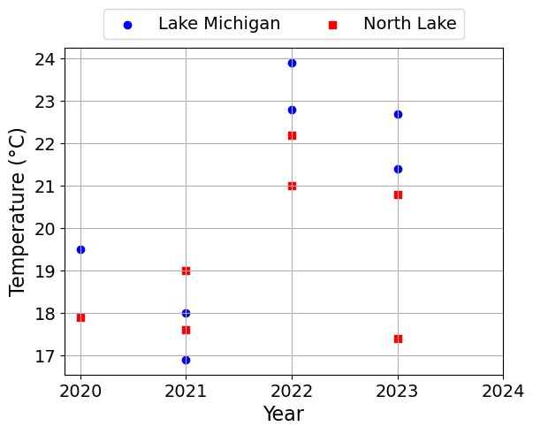
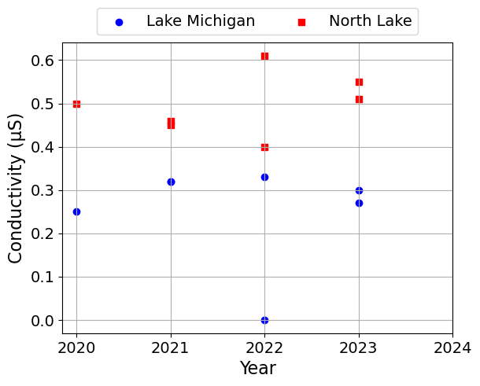
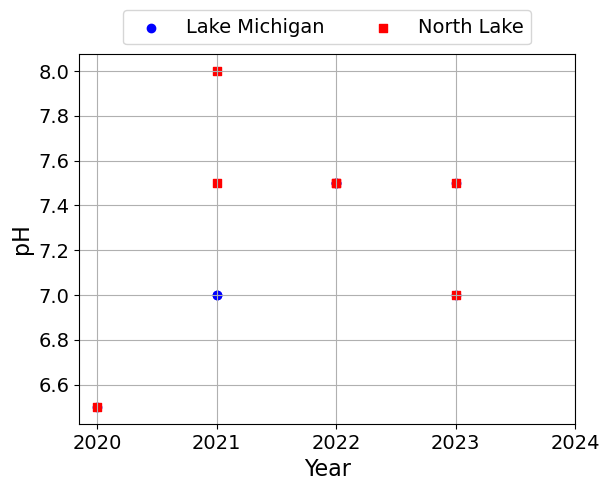
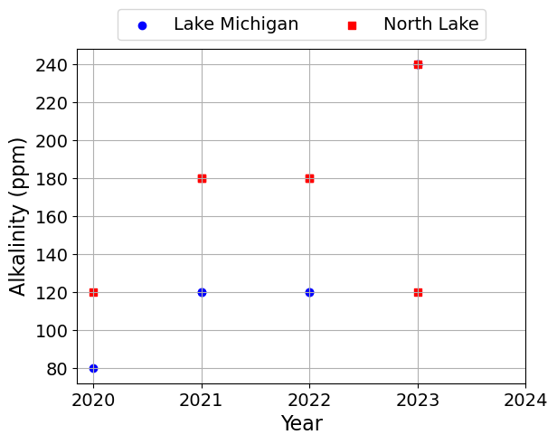
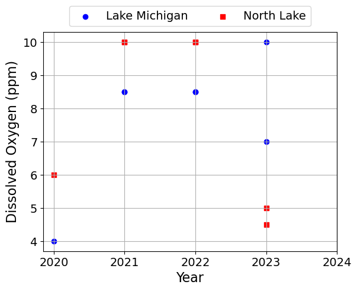
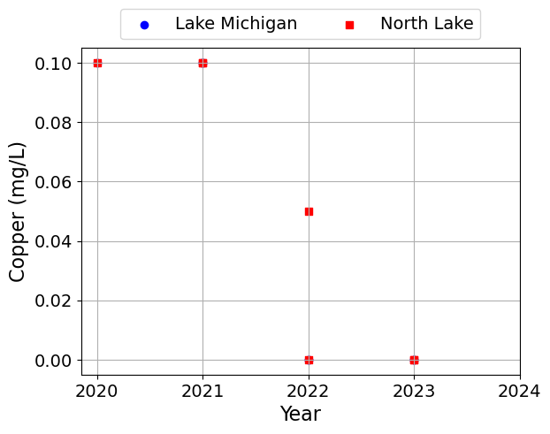
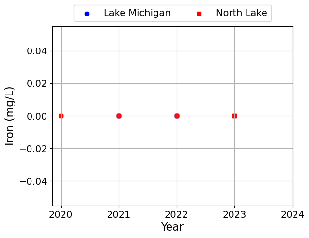
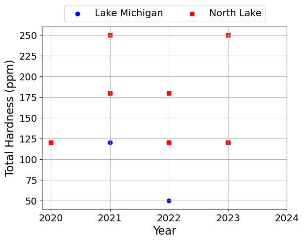
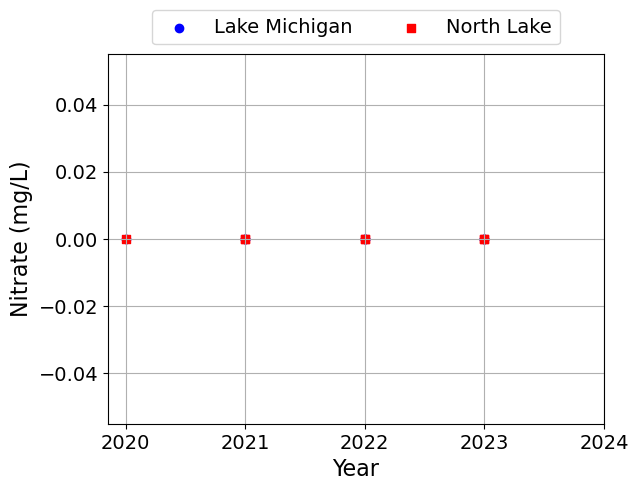
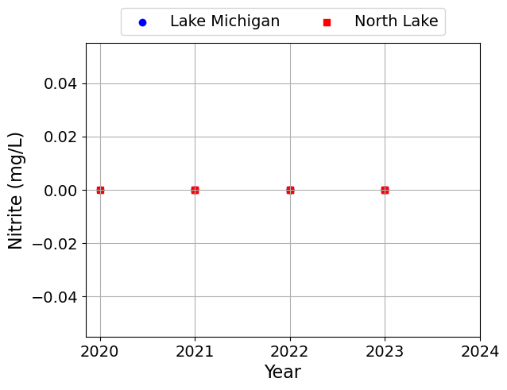
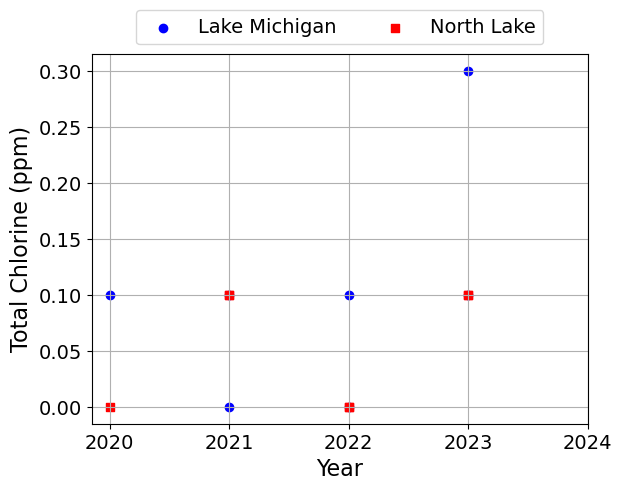
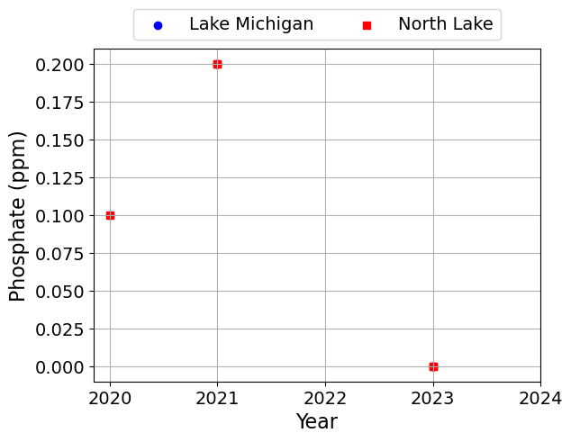
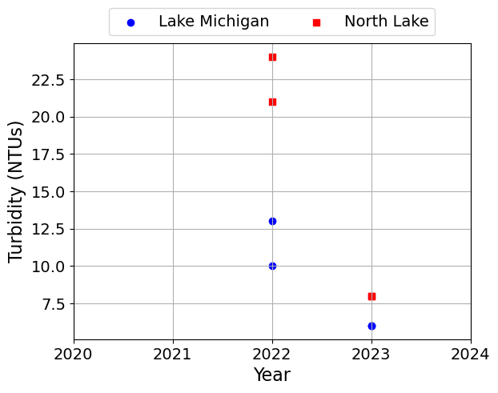
Linear Relationships#
Next, we will look for linear relationships in the data:
Positive correlation between conductivity and disolved oxygen
Possible positive correlation between conductivity and alkalinity
Visualize these (possible) correlations with linear regression
First we will start by plotting the data. You always want to start any data analysis with visual inspections.
def scatter_plot(x, y, seperate_lakes=False):
""" Create a scatter plot for two columns in the dataset
Arguments:
x: the name of the column to plot on the x-axis
y: the name of the column to plot on the y-axis
"""
def finalize_plot():
plt.xlabel(x)
plt.ylabel(y)
plt.grid()
plt.legend(loc='lower center', bbox_to_anchor=(0.5, 1.0), ncol=2)
plt.show()
for j,l in enumerate(lakes):
df = data[data['Lake'] == l]
plt.scatter(df[x], df[y], label=l, marker=symbols[j], color=colors[j])
if seperate_lakes:
finalize_plot()
if not seperate_lakes:
finalize_plot()
Dissolved Oxygen and Conductivity#
scatter_plot('Dissolved Oxygen (ppm)', 'Conductivity (μS)')
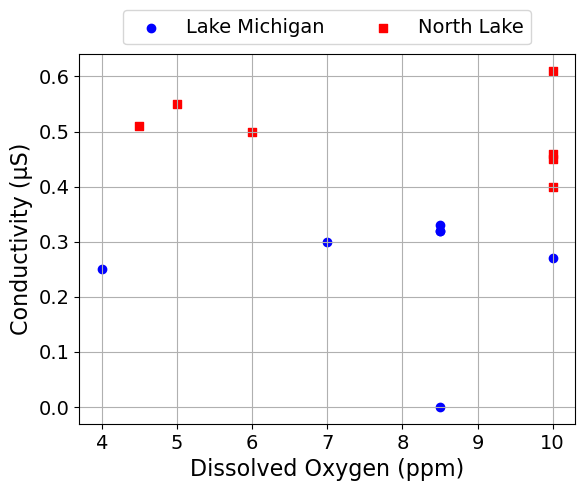
We can also make seperate plots for each lake.
scatter_plot('Dissolved Oxygen (ppm)', 'Conductivity (μS)', seperate_lakes=True)
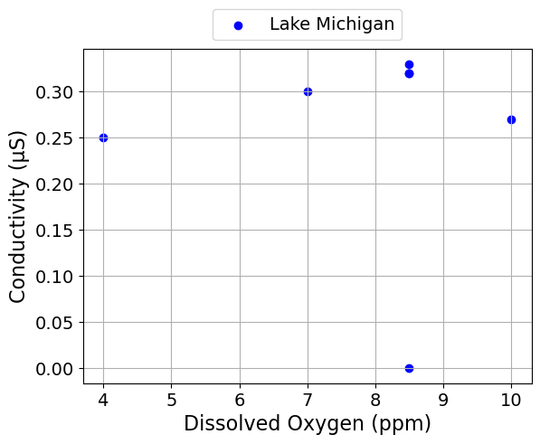
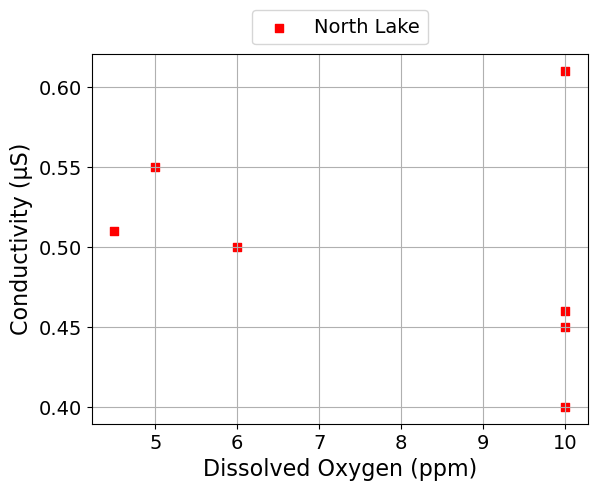
Alkalinity and Conductivity#
scatter_plot('Alkalinity (ppm)', 'Conductivity (μS)')
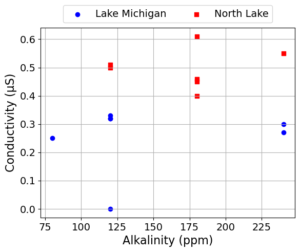
scatter_plot('Alkalinity (ppm)', 'Conductivity (μS)', seperate_lakes=True)
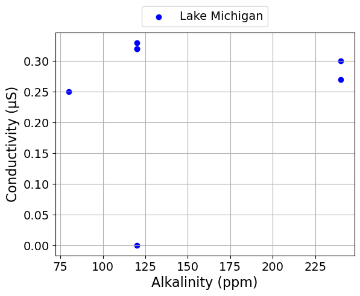
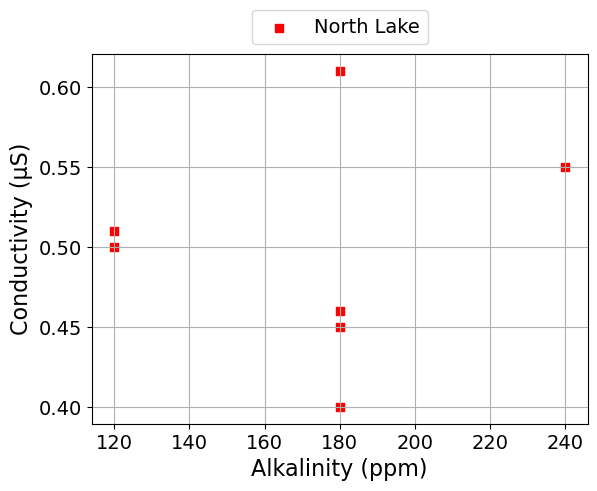
Alkalinity and Total Hardness#
scatter_plot('Alkalinity (ppm)', 'Total Hardness (ppm)')
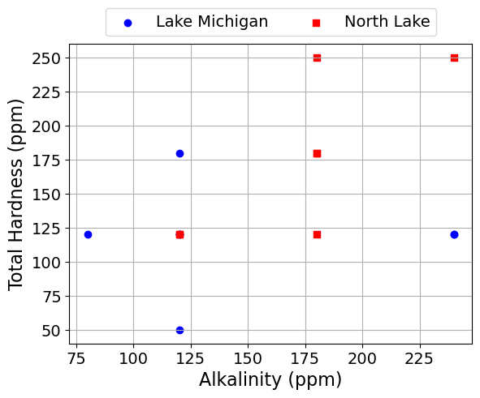
scatter_plot('Alkalinity (ppm)', 'Total Hardness (ppm)', seperate_lakes=True)
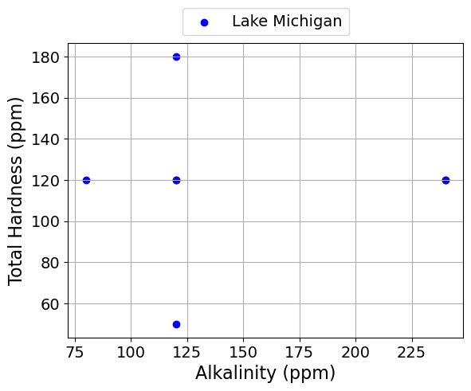
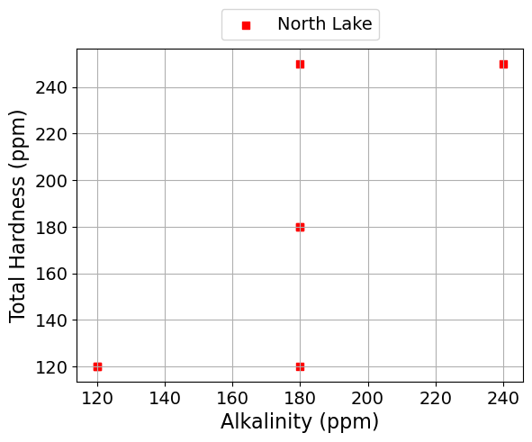
Linear Regression#
Next, we will calculate the best fit line and correlation coefficient.
# We will use scipy.stats to calculate the linear regression
import scipy.stats as stats
def scatter_plot_with_linear_regression(x, y):
""" Create a scatter plot with linear regression
for two columns in the dataset
Arguments:
x: the name of the column to plot on the x-axis
y: the name of the column to plot on the y-axis
"""
# Select the data for the x and y columns
x_data = data[x].values
y_data = data[y].values
# Perform linear regression
b1, b0, r_value, p_value, std_err = stats.linregress(x_data, y_data)
print("slope =", round(b1,3), x, "/", y)
print("intercept =", round(b0,2), y)
print("r =", round(r_value,2))
# Plot the raw data
for j,l in enumerate(lakes):
df = data[data['Lake'] == l]
plt.scatter(df[x], df[y], label=l, marker=symbols[j], color=colors[j])
# Plot the linear regression line
plt.plot(x_data, b0 + b1 * x_data, color='black', label='Best Fit Line')
# Plot the mean values of x and y
# By definition, the regression line passes through the mean values of x and y
x_mean = x_data.mean()
y_mean = y_data.mean()
plt.plot(x_mean, y_mean, marker='d', color='black', linestyle='', label='Mean (Average) Values')
plt.xlabel(x)
plt.ylabel(y)
plt.grid()
plt.legend(loc='center left', bbox_to_anchor=(1.0, 0.5))
plt.title("Both Lakes")
plt.show()
def scatter_plot_with_linear_regression_by_lake(x, y):
""" Create a scatter plot with linear regression
for two columns in the dataset by lake
Arguments:
x: the name of the column to plot on the x-axis
y: the name of the column to plot on the y-axis
"""
# Loop over the lakes
for j,l in enumerate(lakes):
# Get the data for the current lake
df = data[data['Lake'] == l]
# Select the data for the x and y columns
x_data = df[x].values
y_data = df[y].values
# Plot the data
plt.scatter(x_data, y_data, label=l, marker=symbols[j], color=colors[j])
# Perform linear regression
b1, b0, r_value, p_value, std_err = stats.linregress(x_data, y_data)
print(" *** ", l, " ***")
print("slope =", round(b1,3), x, "/", y)
print("intercept =", round(b0,2), y)
print("r =", round(r_value,2))
print(" ")
# Plot the linear regression line
plt.plot(x_data, b0 + b1 * x_data, color='black', label='Best Fit Line')
# Plot the mean values of x and y
# By definition, the regression line passes through the mean values of x and y
x_mean = x_data.mean()
y_mean = y_data.mean()
plt.plot(x_mean, y_mean, marker='d', color='black', linestyle='', label='Mean (Average) Values')
plt.xlabel(x)
plt.ylabel(y)
plt.legend(loc='center left', bbox_to_anchor=(1.0, 0.5))
plt.grid()
plt.title(l)
plt.show()
Dissolved Oxygen and Conductivity#
scatter_plot_with_linear_regression('Dissolved Oxygen (ppm)', 'Conductivity (μS)')
slope = -0.005 Dissolved Oxygen (ppm) / Conductivity (μS)
intercept = 0.41 Conductivity (μS)
r = -0.07
scatter_plot_with_linear_regression_by_lake('Dissolved Oxygen (ppm)', 'Conductivity (μS)')
*** Lake Michigan ***
slope = -0.001 Dissolved Oxygen (ppm) / Conductivity (μS)
intercept = 0.26 Conductivity (μS)
r = -0.01
*** North Lake ***
slope = -0.008 Dissolved Oxygen (ppm) / Conductivity (μS)
intercept = 0.56 Conductivity (μS)
r = -0.32
Alkalinity and Conductivity#
scatter_plot_with_linear_regression('Alkalinity (ppm)', 'Conductivity (μS)')
slope = 0.001 Alkalinity (ppm) / Conductivity (μS)
intercept = 0.25 Conductivity (μS)
r = 0.27
scatter_plot_with_linear_regression_by_lake('Alkalinity (ppm)', 'Conductivity (μS)')
*** Lake Michigan ***
slope = 0.0 Alkalinity (ppm) / Conductivity (μS)
intercept = 0.21 Conductivity (μS)
r = 0.16
*** North Lake ***
slope = 0.0 Alkalinity (ppm) / Conductivity (μS)
intercept = 0.46 Conductivity (μS)
r = 0.13
Alkalinity and Total Hardness#
scatter_plot_with_linear_regression('Alkalinity (ppm)', 'Total Hardness (ppm)')
slope = 0.429 Alkalinity (ppm) / Total Hardness (ppm)
intercept = 77.73 Total Hardness (ppm)
r = 0.41
scatter_plot_with_linear_regression_by_lake('Alkalinity (ppm)', 'Total Hardness (ppm)')
*** Lake Michigan ***
slope = 0.012 Alkalinity (ppm) / Total Hardness (ppm)
intercept = 116.85 Total Hardness (ppm)
r = 0.02
*** North Lake ***
slope = 1.075 Alkalinity (ppm) / Total Hardness (ppm)
intercept = -10.0 Total Hardness (ppm)
r = 0.76